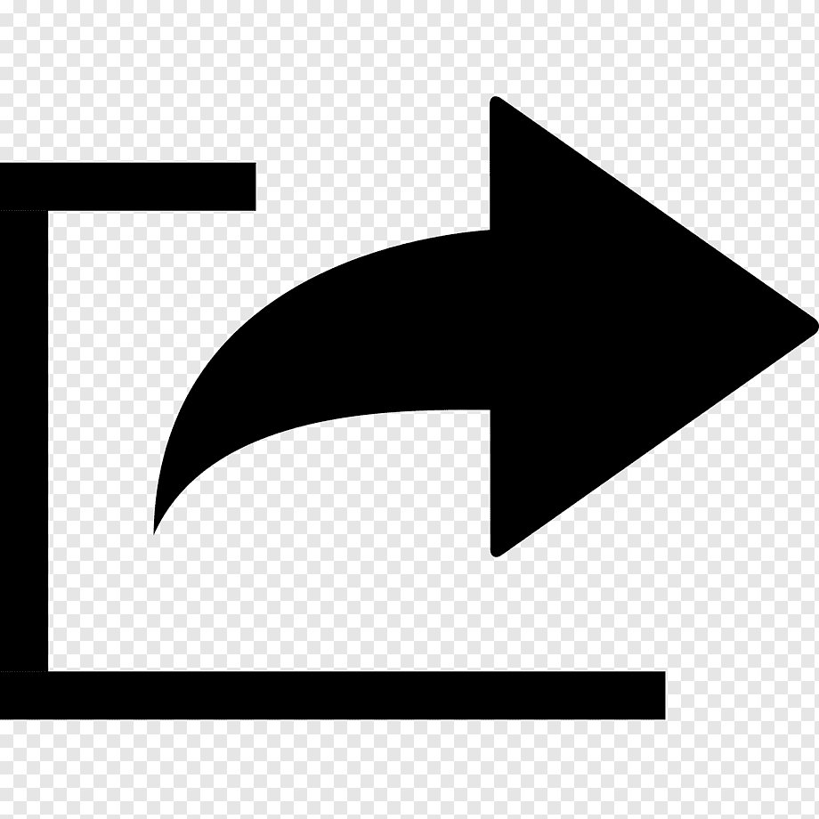

ㅤ
아우리
1시간 전
ㅇㅎ)요즘 인방수위..
미안하다 이거 보여주려고 어그로끌었다.. 나루토 사스케 싸움수준 ㄹㅇ실화냐? 진짜 세계관최강자들의 싸움이다.. 그찐따같던 나루토가 맞나? 진짜 나루토는 전설이다..진짜옛날에 맨날나루토봘는데 왕같은존재인 호카게 되서 세계최강 전설적인 영웅이된나루토보면 진짜내가다 감격스럽고 나루토 노래부터 명장면까지 가슴울리는장면들이 뇌리에 스치면서 가슴이 웅장해진다..

ㅤ
아우리
1시간 전
미안하다 이거 보여주려고 어그로끌었다.. 나루토 사스케 싸움수준 ㄹㅇ실화냐? 진짜 세계관최강자들의 싸움이다.. 그찐따같던 나루토가 맞나? 진짜 나루토는 전설이다..진짜옛날에 맨날나루토봘는데 왕같은존재인 호카게 되서 세계최강 전설적인 영웅이된나루토보면 진짜내가다 감격스럽고 나루토 노래부터 명장면까지 가슴울리는장면들이 뇌리에 스치면서 가슴이 웅장해진다..